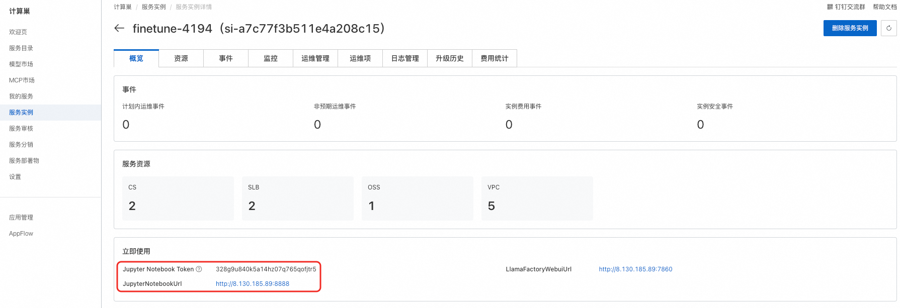

基于ECS,ACS/ACK集群的大模型微调文档
支持功能
- 一站式部署
支持ECS/ACK/ACS多种部署方式，自动配置LLaMA-Factory、Jupyter、SwanLab环境及OSS存储。 - 完整微调流程
基模选择 → 模型微调 → 效果验证 → 模型导出 → 一键部署上线。
模型微调实例部署
- 进入计算巢模型市场，点击模型微调，进入实例部署页面
-
选择参数完成部署
-
ECS:
-
ACS:
-
部署后等待部署完成查看服务实例的输出，包括Jupyter Notebook链接和Token，LLaMA-Factory链接。
模型微调/训练
点击部署完时候后获取的LLaMA-Factory链接，进入LLama-Factory页面，完成后续的模型训练、验证等操作。
模型选择
- 指定已有模型：
例如创建服务实例时选择的基模为Qwen/Qwen3-8B，那么ModelPath就可设置为 /llm-model/Qwen/Qwen3-8B。该路径有两部分组成：/llm-model 为固定路径、Qwen/Qwen3-8B 为模型名称，该名称可以从实例部署参数中获取。
- 选择下载模型：
LLaMA-Factory 支持直接从 Hugging Face 和 ModelScope 下载模型。但需要注意：当实例部署地域为中国地域时，由于网络问题从 Hugging Face 下载可能会报错。
下面以 Qwen3-8B 作为基础模型，训练数据集采用 glaive_toolcall_zh_demo 为例：

模型验证
验证模型可以从数据集中选择验证数据集，数据集可以采用 LLaMA-Factory 自带的，也可以直接上传到挂载目录，然后选择指定的目录数据集，下面介绍如何进行验证：
通过验证集验证：
- 点击
Evaluate&Validate - 选择数据集，
- 如果是采用 LLaMa-Factory 自带的数据集，选择默认值即可
- 如果需要采用自定义数据集，则需要手动指定数据集目录，然后在页面选择该目录中的验证数据集。具体操作与数据集类似，参考：数据集（训练和验证）
- 点击验证
交互页面直接chat验证
- 点击
Chat按钮 - 选择 checkpoint（表示刚刚模型训练的保存点），并点击
load model开始加载模型。 - 加载模型完成后会出现 Chat 页面，输入 prompt 进行测试即可。
模型导出
模型训练完成并验证通过后，可以将模型导出到 OSS 挂载目录，挂载目录为：/llm-model/models

数据集（训练和验证）
对于采用 ModelScope 或 Hugging Face 的数据集，可以直接修改 LLaMA-Factory/data/dataset_info.json，新增数据集的 URL 等配置。例如：新增一个 ModelScope 的 helloworld0/Brain_teasers 数据集：
- 进入计算巢服务实例页面，并点击 Notebook 的链接，进入 Jupyter Notebook 页面。

进入 Jupyter 后输入计算巢实例中返回的 Jupyter Notebook Token，随后点击旁边的 Log in 按钮。

- 进入
LLaMA-Factory/data目录，并右击dataset_info.json，选择 Editor
- 新增数据集配置
- 编辑完后进入 LLaMA-Factory 页面选择数据集
方式二：在 Notebook 中手动下载数据集
- 进入 Jupyter Notebook 页面。
- 点击 New Terminal 创建一个新的命令行页面
- 执行 ModelScope、wget 等命令下载数据集到
/llm-model中指定的目录，例如/llm-model/datasets。例如下载 ModelScope 上的指定数据集 tomyzcf/qwen3-finetune-test，执行如下命令：
cd /llm-model/datasets
modelscope download --dataset helloworld0/Brain_teasers --local_dir ./

- 如果
/llm-model/datasets目录中没有dataset_info.json文件，需要新建该文件，并加入对应的配置：
{
"Brain_teasers": {
"filename": "data.json",
"columns": {
"prompt": "text"
}
}
}
- 进入 LLaMA-Factory 页面选择数据集

方式三：直接上传到 OSS 后指定数据集目录
- OSS Bucket 的
/llm-model目录默认会挂载到容器的/llm-model目录。可以采用 ossutil 工具手动将文件上传到 OSS/llm-model目录，这样便可以在容器中获取到该数据。 - 最后在 LLaMA-Factory 中指定数据集目录和具体的数据集。

可视化训练追踪
部署服务实例时会自动安装 SwanLab，方便模型微调可视化。SwanLab 支持多端同时查看模型微调状态，包括手机、Windows 等。使用方式如下：
- 登录 SwanLab 官网：https://swanlab.cn/，如果没有账号需要先注册。
- 获取 SwanLab API Key，如下所示
- 在 SwanLab 中创建 Project，例如可以创建一个名为 llamafactory 的 Project。
- 在 LLaMA-Factory 部署时选择 SwanLab 可视化，并填写基本信息，如下所示：

- 当训练开始后可在 SwanLab 的 Web UI 上查看训练过程。
模型部署结合微调
当模型微调验证通过后，可直接导出到挂载的 OSS 目录 /llm-model 或其子目录，随后通过计算巢提供的模型推理服务快速部署该微调后的模型。下面做详细说明：
- 通过计算巢模型微调后，将模型导出到
/llm-model/models目录（该目录为 OSS 的挂载目录）。例如导出时设置 Export dir 为/llm-model/models/Qwen3-8B-test/，如下所示：
导出完成后可以在 OSS bucket 中看到该模型：


- 使用计算巢推理服务部署服务实例。部署时可以选择已有集群和已有 OSS bucket，点击该链接部署：部署推理服务。参数选择如下：
| 参数名称 | 选择值 |
|---|---|
| 地域 | 与模型微调所选地域一致 |
| 集群选项 | 已有集群（也支持新建集群） |
| K8s 集群 ID | 选择与模型微调一致的 ACS 集群 |
| OSS Bucket 选项 | 已有 Bucket |
| 已有 OSS Bucket 名称 | 选择与模型微调一致的 Bucket |
| 模型系列 | Custom |
| 自定义模型路径 | 选择刚导出的模型路径 |
| 容器镜像 | 根据实际情况调整 |
| 部署脚本 | 根据实际情况调整 |
- 点击下一步，等待部署完成后进行访问。
其他
微调报错怎么查
方式 1：查看容器日志
方式 2：在 Jupyter Notebook 执行查看日志命令

服务网址无法打开排查
当服务由于某些原因崩溃时，可以采用下面的方案进行排查和重启：
ECS 部署
- 登录 ECS（会话管理方式或者 Workbench）。
- 查看容器状态，执行
docker ps查看容器状态。
root@iZ2zeifk65wurg3nazwow4Z:~# docker ps
CONTAINER ID IMAGE COMMAND CREATED STATUS PORTS NAMES
8df508515468 compute-nest-registry.cn-hangzhou.cr.aliyuncs.com/computenest-test/llama-factory:v1.1.1 "/usr/local/bin/entr…" 15 minutes ago Up 15 minutes 0.0.0.0:7860->7860/tcp, :::7860->7860/tcp, 0.0.0.0:8888->8888/tcp, :::8888->8888/tcp LLama-Factory
- 查看日志：
- 执行
docker logs [containerId]查看容器日志。
- 执行

2. 也可以执行 `docker exec -it [containerId] /bin/bash` 进入容器查看 Web UI 日志和 Jupyter 日志，日志所在目录：`/tmp`。

- 重启服务（以下命令均可重启）：
systemctl restart finetune
docker restart LLama-Factory
# 或者
docker restart [ContainerId]